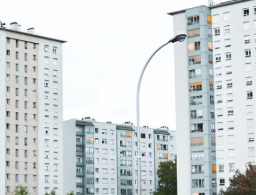
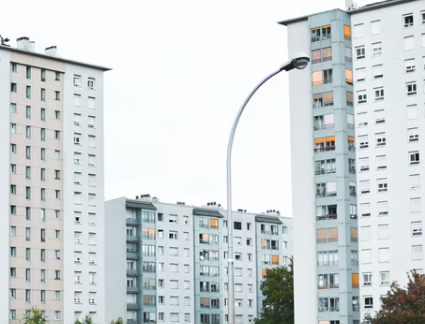

О компании
 


- Заключаем договоры на управление, содержание и текущий ремонт общего имущества в многоквартирных жилых домах с физическими и юридическими лицами, являющимися собственниками таких домов, ТСЖ, жилищно–строительными кооперативами.
- Мы являемся частью группы компаний, занимающейся проектированием, поставкой, монтажом всех инженерных систем, включая отопление, водоснабжение, вентиляцию и электроснабжение, а также ремонтными работами в строительной отрасли (крыши, фасады и т.п.).
- Приглашаем к сотрудничеству, оказываем помощь в проведении общих собраний собственников: выбор способа управления (образование ТСН), переход на специальный счет по кап. ремонту и т.д.
Предлагаем большой выбор услуг для вашей квартиры
Услуги


Объекты

Помогаем жителям дома экономить до 3 млн рублей в год
В тесном взаимодействии с правлением ТСЖ и жителями в течении года подготовили и провели работы по энергоэффективному ремонту на сумму 4,41 млн. руб., из которых 80% это финансовая поддержка Фонда содействия реформирования ЖКХ.
Были установлены автоматизированные узлы отопления с погодозависимым регулированием параметров теплоносителя в системе отопления в каждом подъезде, капитальный ремонт кровли, утепление подвальных помещений, замена окон и наружных входных дверей в подъездах.
новости
Будьте в курсе событий

Пилотный проект по энергоэффективному капремонту
Кировская область получит из средств Фонда содействия реформирования ЖКХ 3,52 млн рублей. Общая стоимость работ по ...
Капремонт на Сутырина 3
Капремонт позволил жителям дома на Сутырина сэкономить на «коммуналке».
Замена бракованных водосчетчиков
Мы производим работы по замене бракованных водосчетчиков в квартирах. На данный момент насчитывается более ...